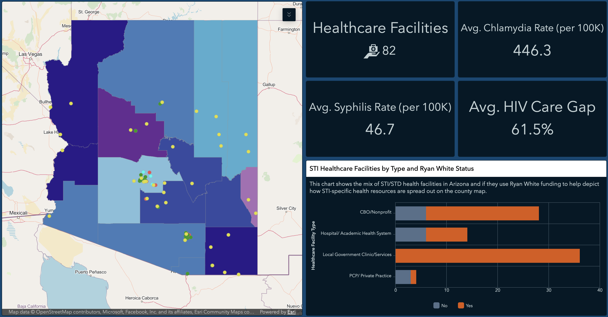
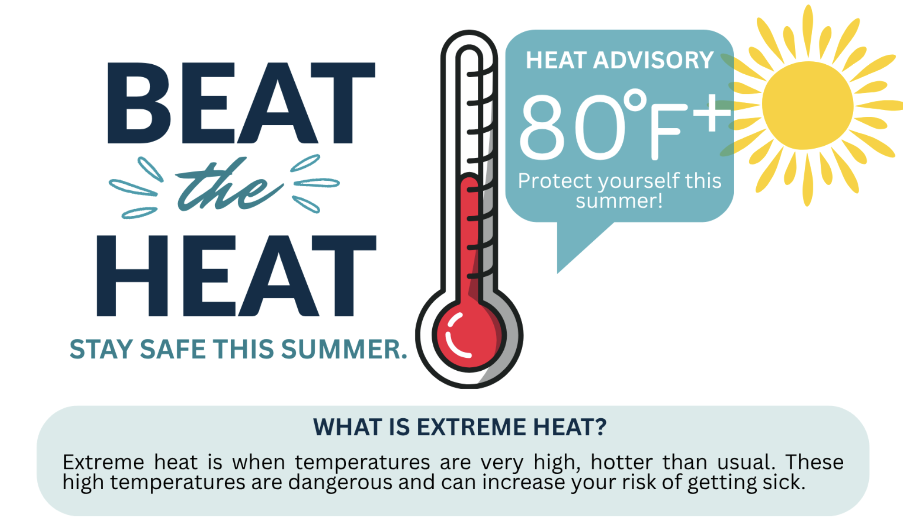
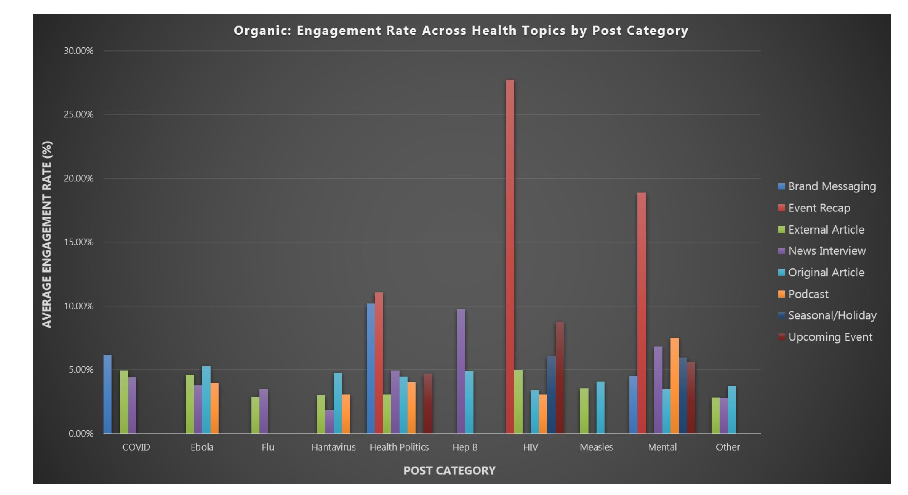
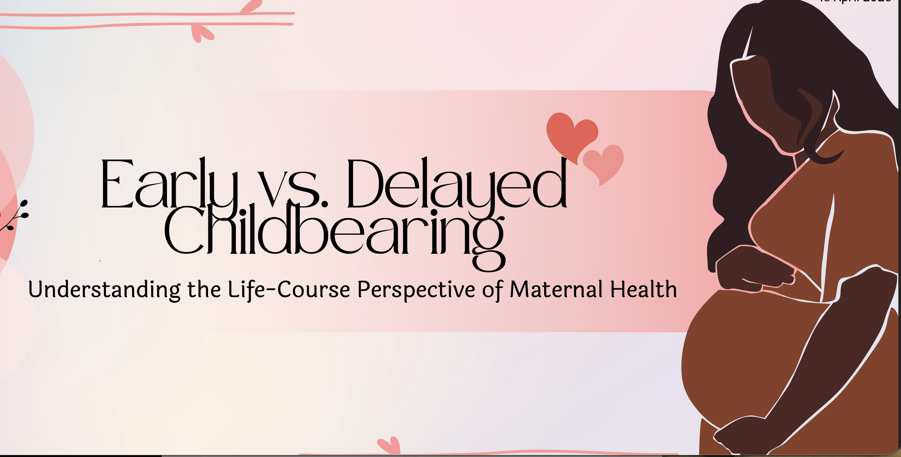
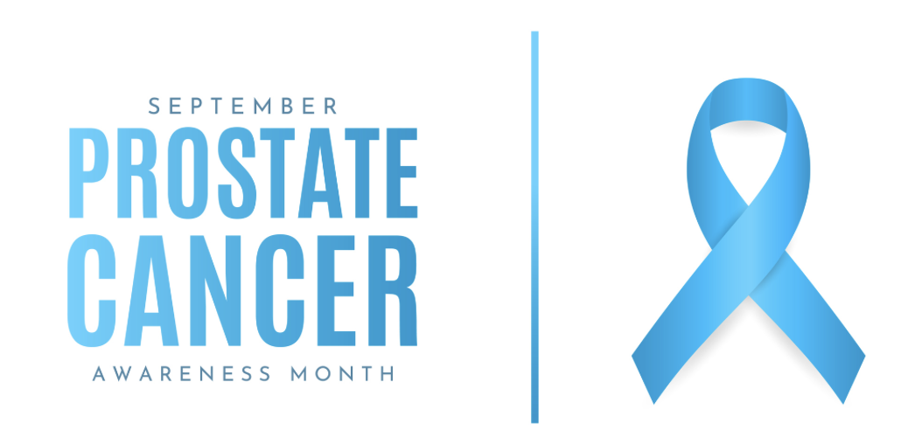
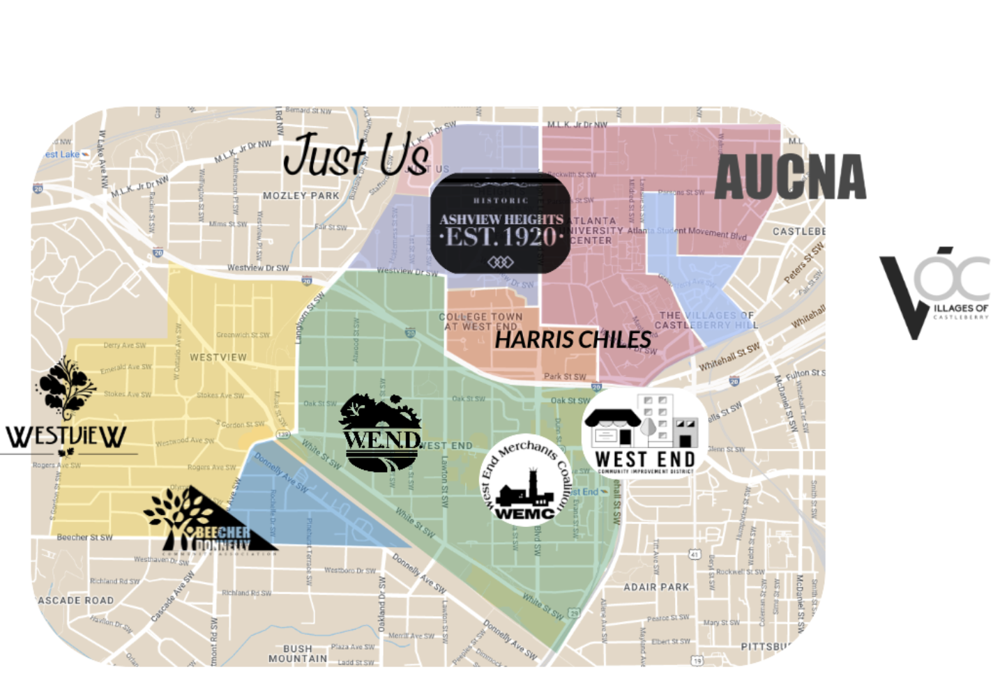
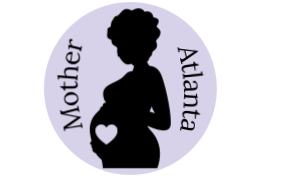
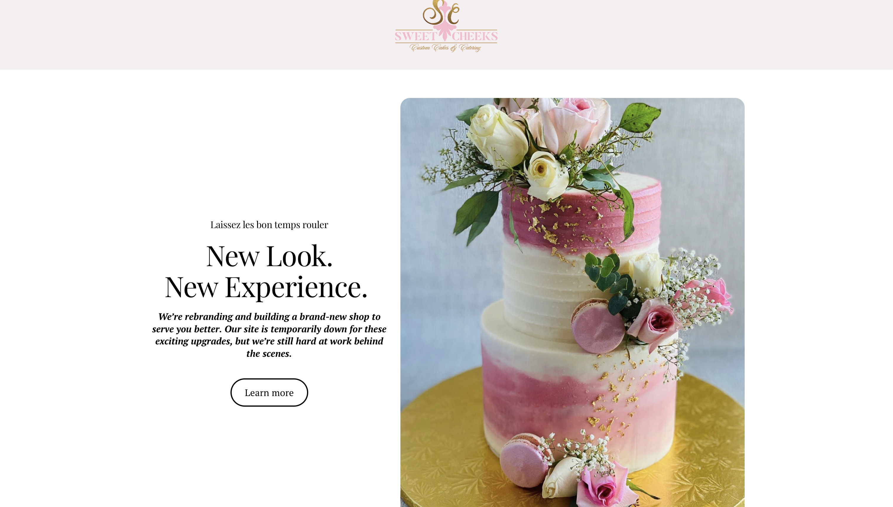

↓
VIEW PROJECT
PROJECTS & RESEARCH
From Data to Real-World Impact.
A collection of applied projects, research, and creative work that translate data, community insight, and innovation into meaningful solutions.
APPLIED PRACTICE EXPERIENCE
Internship
Wellness Equity Alliance | Summer 2026
Real-world experience supporting community-centered healthcare through data, communication, and education.
Arizona STI Disease Burden &
VIEW PROJECT
Extreme Heat Health Literacy

LinkedIn Communications Analytics
ACADEMIC RESEARCH & COURSE PROJECTS
Selected Work
Morehouse School of Medicine
Building research, analytical, and intervention skills to address real-world public health challenges.

Age at First Live Birth and Socioeconomic Status Among U.S. Women

Factors Associated with PSA Testing Among U.S. Men Aged 40 and Older

NPU-T Community Needs Assessment & Windshield Survey
VIEW PROJECT
NPU-T Health Promotion Intervention Plan
Intervention Plan & Community-Facing Website Prototype
PROFESSIONAL PROJECTS
Selected Professional Work
Applying strategic thinking, creative problem-solving, and project development across professional settings.

SWEET CHEEKS CUSTOM CAKES & CATERING
Branding & Business Development
Freelance Branding & Business Development Advisor
Supported brand development, marketing strategy, and business planning efforts while translating the company's evolving vision into a cohesive digital presence.
Strategic
Planning
Planning
Communication
Project
Development
Development
Digital
Design
Design